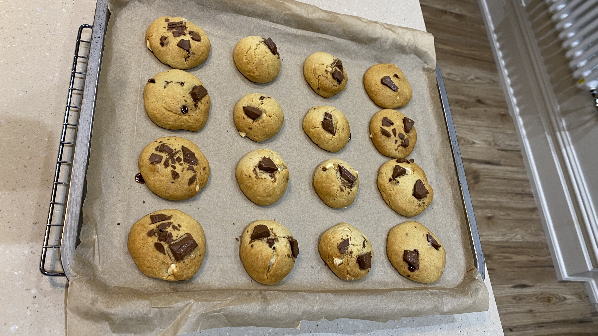

Chocolate Chip Cookies
The unique texture of these sugar-free cookies will leave you wanting more (and more, and more...)
With only 100 calories per cookie, you can treat yourself whenever you want!

Ingredients:
- 165g plain flour
- 100g butter
- 1 medium egg
- 2tsp Madagascan vannila extract
- 0.5tsp bicarbonate of soda
- 50g chocolate chips
- 19tbsp granulated sweetener
Step-by-step instructions:
- Preheat oven to 170 degrees (150 fan)
- Combine the butter and the granulated sweetener in a large bowl and cream together
- Slowly beat in the egg and vanilla extract
- Add the flour and bicarbonate of soda, and beat until mixture is smooth
- Mix in the chocolate chips and spread evenly throughout the mixture
- Divide evenly into 16 balls, and spread out onto a large tray lined with baking paper
- Flatten the balls slightly, and push in more chocolate chips on top of each ball
- Bake in the oven for 13-15 minutes until the cookies have a golden edge